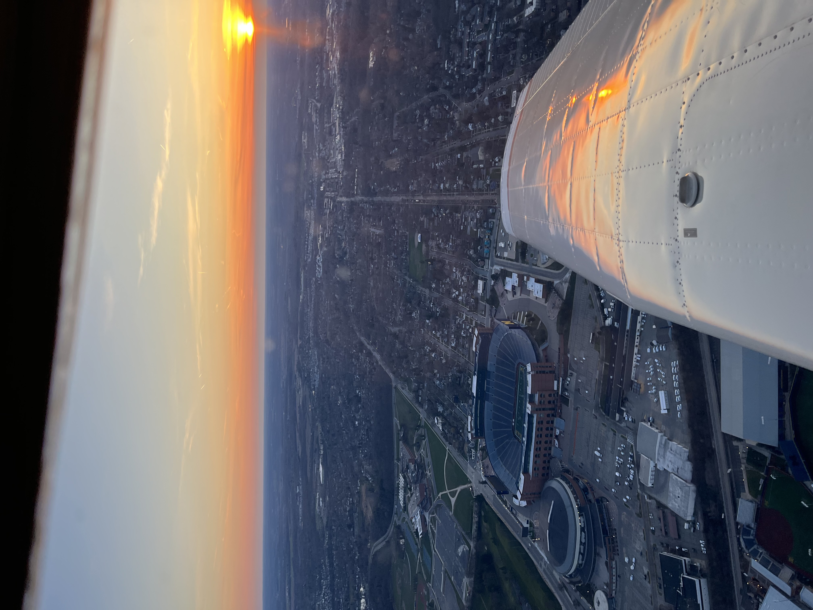
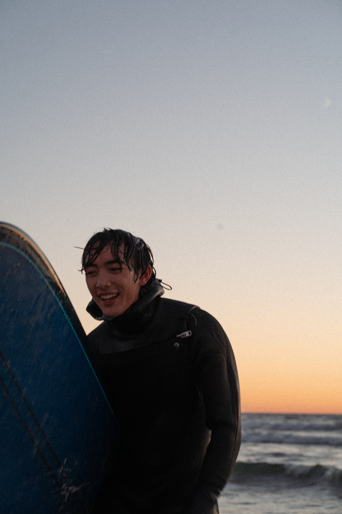
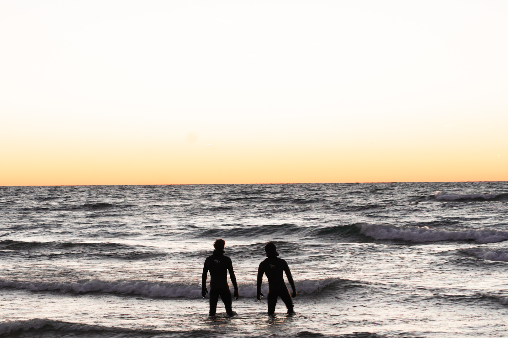

Hi! I'm Kyle. Welcome to my portfolio!
About Me
Hello! I'm a rising senior at the University of Michigan majoring in electrical engineering and minoring in computer science. As a proud product of the Legos as a kid to engineering pipeline, I can confidently say that I've not lost the excitement of building, creating, and learning. (WORK ON THIS TRANSITION)When my dad decided to pursue his pilot's license during COVID, I was allowed the privilege of sitting right seat for many flights. Those experiences sparked my own interest for aviation, which I was able to exercise as an avionics wiring harness technician at Lapeer Aviation. (CLEAN UP THIS SENTENCE)My time at Lapeer Aviation was highlighted by test flights with my boss to verify my own work in the planes, as well as the uncomfortable periods spent in the tails of planes contorting my body to route cables and wiring harnesses.
(TAKE YOUR TIME ON THIS PARAGRAPH) These early experiences in aviation grew during my time at AeroTrain, where I got hands-on with embedded systems for pilot training and flight simulation. I also joined the student team Michigan Autonomous Aerial Vehicles, where I developed skills in PCB design, system integration, and collaborative problem-solving to tackle real flight-related challenges. I love building, troubleshooting, and thinking through how all the pieces of a system come together—whether on the ground or in the air.
Aside from my technical interests, I am passionate about many other things. I started learning the cello in elementary school, and my love and appreciation for the instrument has grown as I've been able to play for weddings, serve in my local church, and act as the principal cello for the U of M campus strings orchestra for a year. Also, I love doing anything outdoors. One of my favorite activities when the weather cooperates is cold water surfing in Lake Michigan. Even when the waves are lackluster, any disappointment is quickly cured by the unrivaled beauty of a Lake Michigan sunset enjoyed from the middle of the lake on a bobbing surfboard. Lastly, I enjoy playing the game of basketball. I've played intramurals all three years I've been at school, and had an awesome experience winning an intramural championship in the 5 V 5 competitive league with my team. The discipline I've shown in refining these skills, along with my willingness to learn from those better than me are qualities I aim to carry into my professional work.






Projects
Automated Plant Watering System
FILL
Sensor Package for Atmospheric Health Analysis
FILL
Carrier PCB for Drone Fleet
FILL
Contact
Email: kyledima@umich.edu
Phone: 248-466-8615